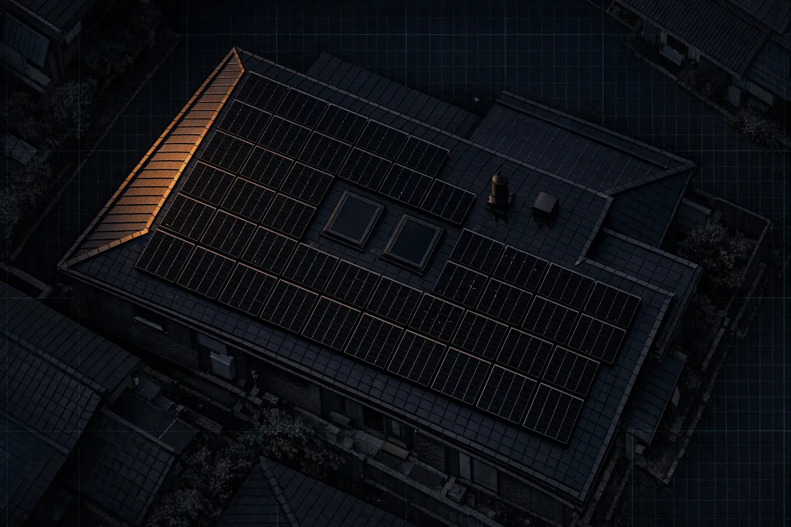

위성영상 한 장을
배치 가능한 격자로 바꾼다
주소로 건물을 찾아 위성영상을 잘라내고, 그 위에 지붕면을 그린 뒤, 모듈이 최대 몇 장 들어가는지 계산해 외부 발전 시뮬레이션으로 넘기는 단일 페이지 앱과 그 뒤의 얇은 BFF.

01한눈에
서버에 상태를 두지 않는 SPA 하나와, 자격증명을 감추기 위해서만 존재하는 얇은 BFF. 그게 전부다.
layout.tsx 뿐. 나머지 UI 는 전부 "use client"useState 30개를 혼자 소유. context·상태 라이브러리 없음output: "standalone" · React Compiler| 항목 | 내용 |
|---|---|
| 런타임 | 전 서버 코드 runtime = "nodejs" |
| 시장 | 일본. <html lang="ja"> 고정, 지붕 경사를 각도가 아니라 寸(sun) 으로 입력받는다 |
| 외부 마스터 | 모듈·축전지는 한화큐셀 재팬 사내 시스템(QSP), 발전 시뮬레이션은 MUSBI |
| 코드 규모 | 약 7,200 LOC. 최대 파일은 CropPopup.tsx(1,293) · page.tsx(855) |
02레이어
경계 규칙은 하나다 — 클라이언트가 직접 부르는 외부 서비스는 Google Maps 뿐이고, 나머지는 전부 서버를 지난다.
Home 이 상태를 소유하고, 폴리곤의 진실은 CropPopup 의 캔버스에, 배치 계산은 메인 스레드에서 동기로 돈다.
BFF 라우트 전부가 이 뒤에 있다. /api/openapi 와 /reference 만 경계 밖이고, 대신 ENABLE_API_DOCS 로 노출 자체를 막는다.
라우트 핸들러는 얇고, 업스트림 호출·zod 검증·envelope 정규화는 src/lib/** 이 맡는다.
Google Maps 키만 NEXT_PUBLIC_* 로 클라이언트 번들에 인라인된다. Maps JS SDK 가 브라우저에서 동작해야 하기 때문이고,
그래서 키 보호는 코드가 아니라 Google Cloud 콘솔의 HTTP 리퍼러 제한에 의존한다.
03컴포넌트 구조
Props-Down / Callbacks-Up 한 가지 패턴으로 끝난다. 상태 라이브러리도, context 도 없다.
트리
RootLayout ← 유일한 서버 컴포넌트. 폰트 3종 + metadata
└─ Home ← "use client", 상태 전부 소유
└─ APIProvider @vis.gl/react-google-maps (places + geometry)
├─ Lnb
│ ├─ LnbDesign 주소검색 · 경사 · 모듈 · 배치 · 용량 표시
│ │ └─ AddressInputLnb Places autocomplete (debounce)
│ ├─ LnbSim 방위 나침반 · 축전지 · 전기요금
│ └─ Section / TipPopover
├─ RoofEditToolbar 그리기 · 처마 · 병합 · 되돌리기 · 삭제
├─ AiDetectControls AI 분석 시작 / 취소
├─ MapView
│ ├─ Map id: solar-pv-map
│ ├─ ViewUpdater viewport 있으면 fitBounds, 없으면 panTo
│ ├─ WheelZoomController 휠 줌 기준점을 커서 → 지도 중심으로 교정
│ └─ CropOverlay 드래그 사각형 + 8방향 리사이즈 핸들
├─ CropPopup 캔버스 에디터 — 폴리곤의 진실이 여기 있다
└─ API 키 누락 폴백
공용 프리미티브는 src/components/common/ — button · checkbox · input-box · radio · select-box · toggle · tooltip. 상태 없는 표시 전용이다.
상태 소유
| 그룹 | 대표 상태 |
|---|---|
| 지도 | center · viewport · address · cropMode · cropData |
| 지붕면 | areas(lat/lng) · pixelAreas(픽셀) · selectedRoofIds · canMergeSelected · canUndoPoint |
| 배치 | slope · panelSize · moduleId · placedPanelsList · placedPixelPanels · placementError |
| 흐름 | activeTab · isPlacementDone · isSubmitting · detectStatus |
| 시뮬 | simForm |
파생값은 상태로 두지 않고 매 렌더 계산한다 — installAreas · drawingMode · panelCount · canPlace · canSubmitSim.
React Compiler 가 켜져 있어 수동 useMemo 를 붙이지 않는다.
시그널 패턴 — 명령을 숫자로 보낸다
폴리곤의 진실이 CropPopup 내부 캔버스 state 에 있어서 부모가 직접 조작할 수 없다.
imperative handle 을 늘리는 대신 증가하는 숫자를 내려보내고 자식이 useEffect 로 변화를 감지한다.
undoSignal · clearSignal · deleteSelectedSignal · mergeSelectedSignal · confirmCropSignal 예외는 하나 — getLayoutBlob() 만 useImperativeHandle. 반환값(Blob)이 필요해 숫자로 표현할 수 없다.
레이스 가드
| 지점 | 가드 |
|---|---|
| geolocation | userOverrodeRef — 주소를 고른 뒤 늦게 도착한 위치 응답 무시 |
| AI 감지 | abortControllerRef.current !== controller 면 stale 응답 폐기 |
| 크롭 센터 이동 | requestAnimationFrame — 팝업이 지도를 가린 다음 프레임에 panTo |
| 결과조회 제출 | isSubmitting — 중복 클릭 차단 + 전체화면 오버레이 |
04데이터 흐름
설계 흐름 7단계와 시뮬레이션 제출 3단계. 노란 점은 통과하지 못하면 다음으로 갈 수 없는 게이트다.
설계 흐름
getDetails → center/viewport 이동.
기본 위치는 마운트 시 geolocation 1회, 거부되면 도쿄 마루노우치.html2canvas(scale ≥ 2) 캡처 → CropData → 팝업 오픈, 지도 잠금.wpOut)이 0인 모듈은 목록에 없다.canPlace = slope !== null && panelSize !== null && install 폴리곤 ≥ 1.
UI 비활성화에 더해 handlePlacePanels 진입부에서도 다시 막는다 — 같은 조건을 두 곳에서 검사한다.
초기화가 전파되는 범위
| 트리거 | 지워지는 것 | 남는 것 |
|---|---|---|
| install 면이 0개가 됨 | 경사 · 모듈 · moduleId | exclude 폴리곤 · 크롭 |
| 툴바 “전체 삭제” | 폴리곤 · 모듈 · 경사 · 도구 | 크롭은 유지 |
| 크롭 팝업 닫기 | 위 전부 + 배치잠금 + 시뮬 폼 + 탭 → design | 주소 · center |
| AI 재분석 승인 | handleDeleteAll + 경사 · 모듈 · 배치잠금 | 크롭 |
| 모듈 변경 | 배치된 모듈 전부 | 폴리곤 |
| 처마 기준선 변경 | 그 폴리곤 위 모듈만 | 다른 면의 배치 |
시뮬레이션 제출 — 3단계 + 이탈
Geocoder().geocode({ location: center }) → extractPostalCode.
주소 검색 결과를 재사용하지 않는다 — 검색 후 지도를 옮겨 다른 건물을 크롭할 수 있어서,
최종 크롭 중심을 다시 역지오코딩해야 위치와 우편번호가 일치한다.POST /api/musbi/sim-check → data.redirectUrl.
검증이 업로드보다 먼저다 — 틀린 파라미터로 S3 에 쓸 이유가 없다.getLayoutBlob() → POST /api/image/upload.
4xx 즉시중단 / 그 외 3회 지수 백오프(500ms → 1000ms).window.location.href = redirectUrl + "&roofImgSrc=" + fileName.
페이지를 떠나므로 로딩 오버레이를 내리지 않는다 — 중단 경로에서만 setIsSubmitting(false).AI 지붕 감지 파이프라인
결과가 지붕의 분할(partition) 이라, 신뢰도 낮은 폴리곤 하나만 버리면 합집합에 구멍이 생긴다.
그래서 부분 폐기가 아니라 전량 차단하고 reason: "low_confidence" 를 돌려준다.
도로나 들판을 잘못 크롭했을 때 모델이 그럴듯한 폴리곤을 환각해도 여기서 막힌다.
05BFF 레이어
라우트 핸들러는 얇다. 업스트림 호출·검증·정규화는 src/lib/** 이 맡고, zod 스키마 하나가 검증과 API 문서를 동시에 만든다.
| 엔드포인트 | 업스트림 | 하는 일 |
|---|---|---|
POST /api/detect-roof | Replicate + OpenRouter | 크롭 이미지 → 정규화 폴리곤 |
GET /api/qsp/btc-items | QSP 마스터 | 모듈(M) / 축전지(B) 목록 |
POST /api/musbi/sim-check | MUSBI | 파라미터 검증 + 결과 페이지 URL 발급. 계산하지 않는다 |
POST /api/image/upload | AWS S3 | 합성 레이아웃 PNG 저장 |
GET /api/openapi | — | zod 스키마에서 생성한 OpenAPI 3.1 JSON |
GET /reference | — | Scalar API Reference UI |
응답 envelope
{ success: true, data }
{ success: false, error: { code, message } }
예외 하나 — detect-roof 의 성공 응답만 envelope 없이
{ polygons, reason } 을 그대로 반환한다. 실패는 envelope 를 쓴다.
zod = SSOT
src/lib/**/schema.ts 의 정의가 런타임 검증이자 OpenAPI 문서의 원본이다.
createDocument({ reused: "ref" }) 가 .meta({ id }) 붙은 스키마를
components.schemas 에 자동 등록한다 — API 문서를 손으로 쓰지 않는다.
callQsp 하나로 수렴
호스트 미설정 확인 → URL+querystring 조립 → fetch(GET, no-store, 30s AbortController) → JSON 파싱 → zod 검증 → upstream result.code 확인 → 판별 유니온 반환 업스트림은 두 API 모두 GET + querystring 이다. BFF 가 POST/JSON 으로 받더라도 여기서 GET 으로 바꿔 부른다 — sim-check 이 그 예다.
| upstream result.code | → HTTP | 의미 |
|---|---|---|
| 200 | 성공 | — |
| 600 | 401 | 토큰 만료 |
| 400 | 422 | 검증 실패 |
| 그 외 | 502 | upstream 오류 |
| 타임아웃(30s) | 504 | 전송 계층 |
| zod 위반 | 502 | "Upstream contract violation" — 사양과 다른 응답을 통과시키지 않는다 |
공용 방어 헬퍼
| 헬퍼 | 존재 이유 |
|---|---|
readJsonBodyWithLimit | req.json() 은 크기 제한이 없어 메모리/CPU 폭탄에 노출된다. arrayBuffer 로 읽어 byte cap 후 파싱 |
envelopeSuccess/Error | proxy.ts 와 detect-roof 까지 같은 포맷을 쓴다 |
formatZodError | issue → "path message" |
ENABLE_API_DOCS === "true" 인 환경에서만 /api/openapi 와 /reference 가 열리고 그 외에는 404 다.
NODE_ENV 가드를 쓰지 않는 이유는 dev/prod 양쪽 다 production 빌드를 쓰기 때문이다.
06보안 경계
Next.js 16 의 proxy 컨벤션(구 middleware 는 deprecated). 함수명은 proxy.
matcher: /api/qsp/:path* · /api/musbi/:path* · /api/detect-roof · /api/image/:path* /api/openapi 와 /reference 는 이 경계 밖 — 대신 ENABLE_API_DOCS 로 노출 자체를 막는다
① Origin 검증
Origin 헤더가 있으면 ALLOWED_ORIGIN(쉼표 구분)과 정확히 일치해야 한다.
헤더가 없으면 GET/HEAD 만 통과 — 브라우저는 safe method 에 Origin 을 붙이지 않는다.
② per-IP rate limit
bff — qsp · musbi · image · 30 req/min
detect — detect-roof · 10 req/min
detect 만 낮은 이유는 호출 한 번당 thinking + output 토큰 과금이 크기 때문이다.
미설정 시 req.nextUrl.origin 으로 폴백한다. 그런데 standalone 빌드는 0.0.0.0:3000 에 바인드하므로
폴백값이 컨테이너 내부 주소가 되고, 리버스 프록시 뒤에서 브라우저가 보내는 Origin 과 절대 일치할 수 없어 모든 POST 가 403 이 된다.
로컬 dev 에서만 우연히 동작하는 폴백이다.
clientIP 결정 규칙
X-Forwarded-For 를 오른쪽에서 TRUSTED_PROXY_HOPS(=1) 번째 항목만 채택한다.
XFF 는 클라이언트가 왼쪽에 아무 값이나 채울 수 있고 신뢰 프록시는 오른쪽에 실제 IP 를 덧붙인다 —
왼쪽을 읽으면 헤더 위조로 한도를 무한히 우회할 수 있다. 없으면 X-Real-IP, 그것도 없으면 "unknown".
MAX_TRACKED_IPS = 10_000 초과 시 Map insertion order 기반 LRU 로 가장 오래된 키를 축출한다.
카운터가 프로세스 메모리에 있어 단일 인스턴스 전제다 — 스케일아웃하면 실효 한도가 인스턴스 수만큼 늘어난다. 그리고 애플리케이션 레벨 인증이 없다. 이 경계는 CSRF 와 과금 폭주를 막을 뿐 인가를 대체하지 않는다.
07배치 알고리즘
이 앱의 계산 핵심. 처마를 수평으로 눕히고, 시작 위상 100가지를 전부 시도해 가장 많이 들어가는 배치를 고른다.
진입점 세 개
| 함수 | 좌표 | 단위 | 호출자 |
|---|---|---|---|
placePanelsOnCanvasCm | 픽셀 | cm | page.tsx — 실제 흐름 |
placePanelsOnCanvas | 픽셀 | mm | 내부 전용 |
placePanels | lat/lng | mm | 크롭 없는 경로 — 현재 UI 에서 도달하기 어렵다 |
고정 규칙과 상수
| 규칙 | 값 | 비고 |
|---|---|---|
| 방향 | landscape 고정 | 모듈 긴 변이 처마와 평행. portrait 타입은 있지만 넘기지 않는다 |
GAP_X_CM | 0.3 cm | 처마 평행 방향 — 거의 붙인다 |
GAP_Y_CM | 3 cm | 처마 수직 방향 — 경사 압축 대상 |
MARGIN_CM | 30 cm | 외주 이격 |
세 상수는 page.tsx 에 하드코딩되어 있고 UI 로 노출되지 않는다.
유효 배치 판정 — 4단계 전부 통과해야 산다
- 4꼭짓점이 전부 인셋 폴리곤 안 (
isPointInPolygon, ray casting) - 모듈 변이 폴리곤 경계와 교차하지 않음 — ㄷ자 지붕의 오목부 방어. 1번만으로는 안쪽 홈을 가로지르는 모듈을 못 잡는다
- 개구와 3방향 비충돌 — 모듈 꼭짓점이 개구 안 / 개구 꼭짓점이 모듈 안 / 변 교차
- 개구 확장 영역 회피
대략 면 수 × 100 × 격자칸 수 × O(n). 메인 스레드 동기 계산이라 큰 지붕에서 UI 가 멈출 수 있다.
page.tsx 가 try/catch 로 placementError 를 표시하지만 느린 것은 잡지 못한다.
지붕면 병합 — mergePolygons.ts
CropPopup 은 “지붕결합” 버튼의 활성 여부를 판정할 때도 이 함수를 그대로 호출한다.
판정과 실행이 하나여서 “버튼은 켜지는데 눌러도 아무 일이 없다”가 구조적으로 불가능하다.
활성 조건을 바꾸려면 별도 판정 함수를 만들지 말고 이 함수를 고쳐야 한다.
bridge-then-union 0. 영면적 배제 정점이 공선인 면이 하나라도 있으면 즉시 null 1. 포개짐 배제 쌍 단위로 작은 면 대비 5% 초과 겹침이면 거부 — 끌다가 포개진 건 "인접"이 아니다 2. 필러 생성 GAP_TOL 3px 이내 근접 + MIN_OVERLAP 10px 이상 겹치는 변 쌍의 틈을 메움 3. union polygon-clipping. 결과가 단일 폴리곤이 아니면 null 4. 구멍 거부 hole 이 있으면 null —없는 지붕을 만들지 않는다5. 톱니 단순화 준-공선 정점 제거 (SIMPLIFY_EPS 0.5px)
상수가 전부 픽셀 단위라 캔버스 해상도가 바뀌면 실질 허용 오차도 함께 바뀐다.
병합 결과는 새 폴리곤이라 eaveEdgeIndex 를 승계하지 않는다 — 병합 후 처마를 다시 확인해야 한다.
08좌표계와 단위
세 좌표계가 돌아가고 Y축 방향이 서로 다르다. 이 시스템에서 가장 흔한 함정이다.
단위도 층마다 다르다
| 층 | 단위 | 예 |
|---|---|---|
UI 입력 · page.tsx 상수 | cm | GAP_X_CM · GAP_Y_CM · MARGIN_CM |
PanelSize · QSP 마스터 | mm | shortAxis→width · longAxis→height |
| 배치 함수 내부 계산 | m | 인셋 거리 · 격자 step |
CropData.sizeMeters 는 위경도 차이에서 직접 계산되고, 그 값이 metersPerPixel 이 되어 배치 축척을 결정한다.
크롭 크기 계산이 틀리면 배치 장수가 통째로 틀린다.
09외부 의존성
서버 쪽 업스트림 중 전용 SDK 를 쓰는 건 S3 뿐, 나머지는 전부 fetch 다.
클라이언트
@vis.gl/react-google-maps ^1.7.1 — Maps JS · Places · Geometry · Geocoder
html2canvas ^1.4.1 — 지도 컨테이너 캡처 (scale ≥ 2, 정수 배율)
polygon-clipping ^0.15.7 — 지붕면 병합 union
lucide-react ^0.577.0 — 아이콘
next/font/google — Figtree · Noto Sans JP · Geist Mono
서버
@aws-sdk/client-s3 ^3.1065 — 레이아웃 이미지 업로드
zod ^4.3.6 — 요청·업스트림 응답 검증 (SSOT)
zod-openapi ^5.4.6 — zod → OpenAPI 3.1
@scalar/nextjs-api-reference ^0.10 — /reference UI
fetch — OpenRouter · Replicate · QSP · MUSBI (전용 SDK 없음)
@google/genai 제거지붕 감지 추론이 OpenRouter Chat Completions 로 옮겨가며 전용 SDK 가 사라졌다. 대체 의존성은 없다 — 순수 fetch 다.
이 SDK 단독 유래였던 전이 의존성 protobufjs 도 함께 사라졌다. 설계 근거는 docs/plans/2026-07-27-gemini-to-openrouter-migration.md.
html2canvas 의 배율을 최소 2 이상의 정수로 올린다. 소수 배율에서는 타일 경계에 1px 흰 줄이 생긴다.
10설정과 배포
환경변수 3파일이 Jenkins 에서 병합되고, NEXT_PUBLIC_* 두 개만 빌드타임에 번들로 굳는다.
환경변수 3파일
.env 공통 키 credential: pv-common-env .env.dev dev 오버라이드 credential: pv-dev-env .env.prod prod 오버라이드 credential: pv-prod-env Jenkins: cat 공통 + 프로파일 > .env → 같은 키는 프로파일이 이긴다 compose: env_file: .env 로 통째 마운트
| 변수 | 시점 | 용도 |
|---|---|---|
NEXT_PUBLIC_GOOGLE_MAPS_API_KEY | 빌드 ARG | Maps JS · Places · Geometry · Geocoder |
NEXT_PUBLIC_AWS_S3_BASE_URL | 빌드 ARG | 업로드 이미지 공개 URL 조립 기준 |
OPENROUTER_API_KEY · OPENROUTER_MODEL | 런타임 | detect-roof 추론. OPENROUTER_MODEL 은 기본값이 없어 미설정 시 500. 둘 다 미설정 시 500 |
GEMINI_API_KEY · GEMINI_MODEL | — | 미사용. OpenRouter 전환 후 코드가 읽지 않는다. 롤백 대비로 잔존 |
REPLICATE_API_TOKEN | 런타임 | SAM 마스크. 미설정 시 조용히 건너뛴다 |
QSP_API_HOST · MUSBI_API_HOST | 런타임 | 업스트림 호스트 (dev/prod 별) |
ALLOWED_ORIGIN | 런타임 | 배포 필수 — 미설정 시 POST 가 전부 403 |
ENABLE_API_DOCS | 런타임 | "true" 일 때만 /api/openapi · /reference 노출 |
NEXT_PUBLIC_* 는 클라이언트 번들에 문자열로 인라인된다. 값을 바꾸려면 컨테이너 재시작이 아니라 이미지 재빌드가 필요하다.
그리고 새 키를 추가하면 Jenkinsfile Validate Environment 스테이지에 : "${VAR:?...}" 검증 라인을 반드시 같이 추가한다(전수 검증 정책).
빠뜨리면 값이 없는 채로 배포가 성공하고 런타임 500/403 으로 나타난다.
컨테이너
Dockerfile (multi-stage) ├─ deps node:20-alpine · pnpm install --frozen-lockfile ├─ builder NEXT_PUBLIC_* ARG 주입 · pnpm build → .next/standalone └─ runner node:20-alpine · non-root nextjs · PORT=3000 · server.js
파이프라인 스테이지·롤백 절차는 CI/CD 파이프라인 문서에 있다.
11타입 시스템
도메인 타입의 SSOT 는 src/app/types/index.ts 다. 골격은 “같은 지붕면이 두 좌표계로 이중화되어 있다”는 것.
CropData imageDataUrl · bounds(CropBounds) · sizeMeters
PolygonArea id · type("install"|"exclude") · paths(LatLng[]) · eaveEdgeIndex?
PixelPolygon id · type · points(PixelPoint[]) · eaveEdgeIndex?
PlacedPanel id · polygonId · corners[4] (LatLng)
PixelPanel id · polygonId · corners[4] (PixelPoint)
PanelSize width(mm) · height(mm) · watt
DrawingMode "install" | "exclude" | null
RoofTool select | drawRoof | drawOpening | flowSetting | editRoof
Lang "ja" | "en"
PolygonArea
Google Maps 위에 그리고 면적을 spherical.computeArea() 로 잰다.
PixelPolygon
실제 편집과 배치가 벌어지는 쪽. 실제 흐름은 전부 이 경로다.
설치 용량은 표시 전용이다 — 배치 모듈 수 × PanelSize.watt / 1000.
시뮬레이션에는 kW 가 아니라 moduleCnt(장수)와 moduleItemId(모듈 코드)가 넘어간다.
12구조적 한계
작동은 하지만 구조에서 비롯된 것들이라 코드를 읽어도 잘 드러나지 않는다. “조용히 실패한다” 가 반복되는 패턴이다.
| 한계 | 영향 | 근거 |
|---|---|---|
| rate limit 이 in-memory | 스케일아웃하면 실효 한도가 인스턴스 수만큼 증가 | proxy.ts |
| 크롭 캡처 실패가 조용하다 | 회색 플레이스홀더가 그대로 흘러가 AI 감지가 항상 실패. “AI 분석이 안 된다”의 유력한 원인 | MapView.tsx |
| SAM 실패가 조용하다 | console.warn 만 남아 계속 실패해도 사용자·운영자가 모른다 | lib/sam/replicate.ts |
| 인셋 자기교차 시 무음 skip | 좁은 면이 배치 0장으로 조용히 사라진다 | panelPlacement.ts |
방위·경사 매핑 미스가 0 으로 낙하 | 검증 오류가 아니라 잘못된 값으로 계산될 수 있다. 선택지를 늘리면 매핑 테이블도 함께 늘려야 한다 | page.tsx |
| S3 객체 정리 로직 없음 | 결과조회 시도마다 UUID 객체가 쌓인다. 버킷 라이프사이클 필요 | api/image/upload |
| 언어 전환 UI 미연결 | const [lang] = useState<Lang>("ja") 로 setter 를 버려 "ja" 고정. 영어 번역문은 전부 있다 | page.tsx · i18n.ts |
| 배치 계산이 메인 스레드 동기 | 큰 지붕에서 UI 프리즈. worker 이관 여지 | panelPlacement.ts |
| 테스트 프레임워크 없음 | 회귀 검증이 lint · tsc · build 뿐 | — |
okf/ 지식 번들 — 도메인 규칙·외부 계약의 진실의 원천 · architecture.md — 본 문서의 텍스트 버전 · sequence-diagrams.md · 보안 코드리뷰 · detect-roof 지연 진단